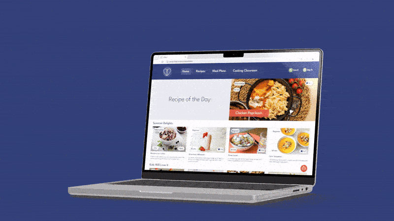
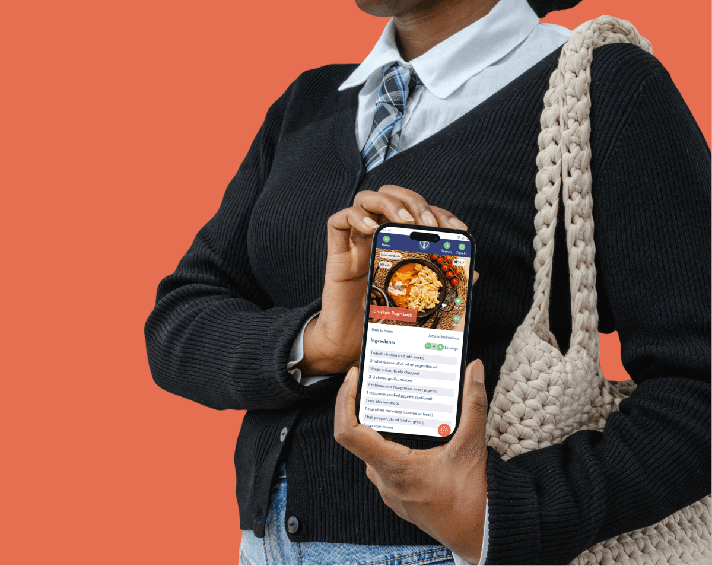
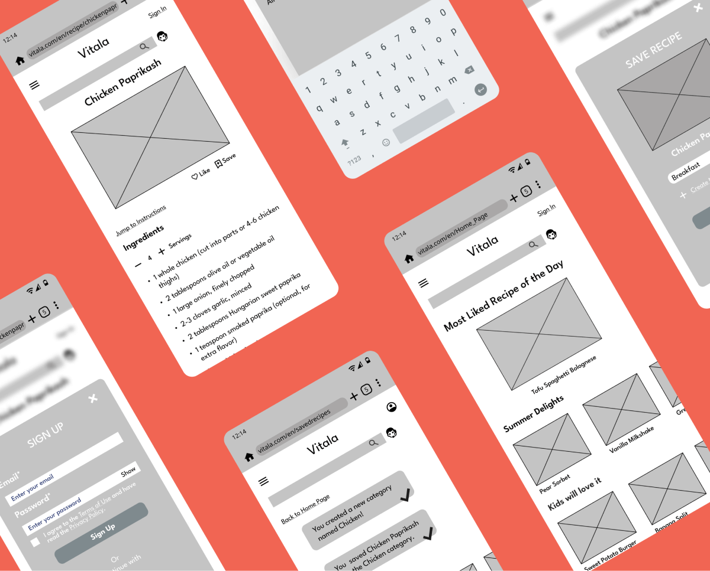
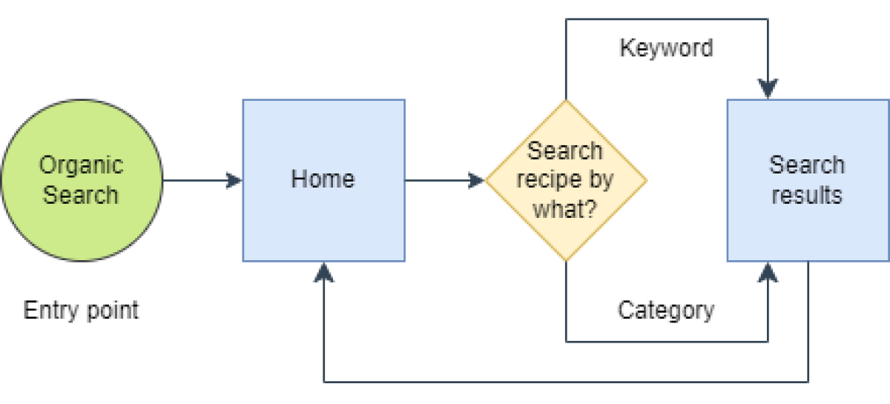
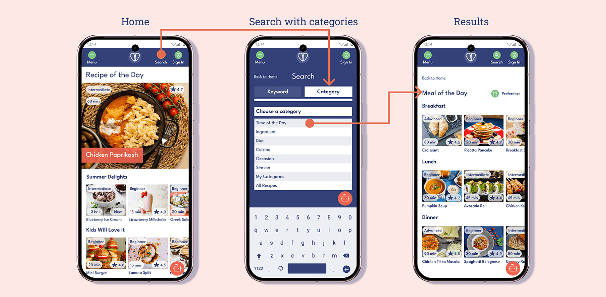
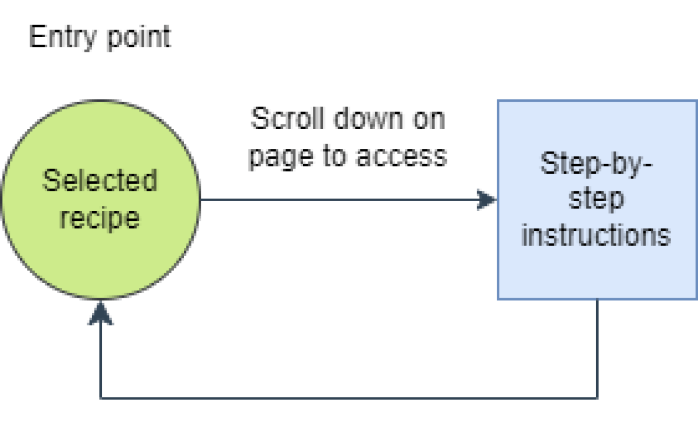
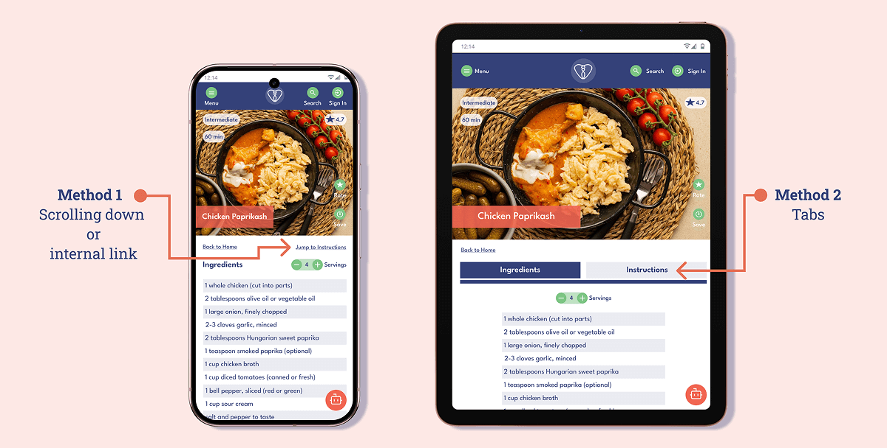
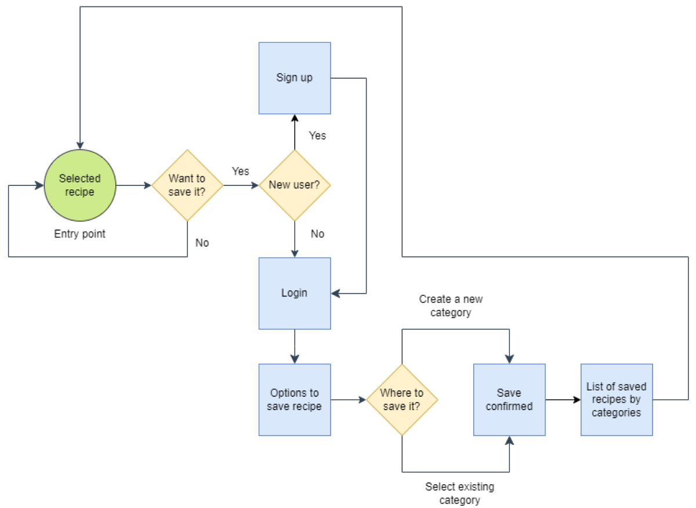
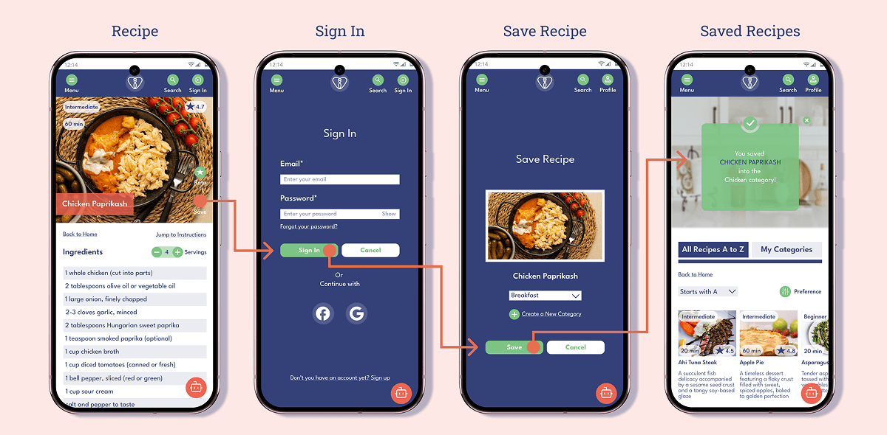
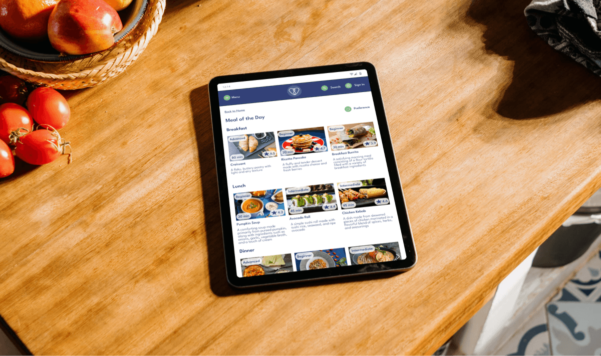

Vitala

DESIGNER
Nikolett Muller
ROLE
UX Research, UX Design, UI Design
TOOLS
Figma, Lyssna, Canva, Draw.io, Unsplash, Mockuuups Studio
Explore case study
PROBLEM STATEMENT
“Take care of your body. It’s the only place you have to live.”
Jim Rohn’s quote captures a simple truth, yet maintaining healthy habits is rarely simple in practice. While many people understand the importance of proper nutrition, awareness alone does not lead to consistent behavior. Busy schedules, convenience driven choices, and deeply ingrained routines often override long term intentions. Many individuals return to familiar eating patterns, feel overwhelmed by conflicting nutrition advice, or lack confidence in the kitchen. The core challenge is not knowledge, but the absence of structured support that helps transform intention into sustainable daily action.
SOLUTION
Disrupting old eating habits
Vitala translates motivation into structured action through a focused and distraction free experience. Unlike many recipe platforms filled with banners, pop ups, and lengthy personal stories before the actual instructions, Vitala prioritizes clarity and usability. Recipes are presented in a clean format that allows users to concentrate fully on cooking.
To further reduce friction, the app integrates an in app cooking assistant called Flavormate, an AI powered feature that provides real time support such as ingredient substitutions or quick guidance when a problem arises. This ensures users do not need to leave the platform to search for answers elsewhere. By combining structured, goal oriented recipes with immediate contextual assistance, Vitala supports gradual habit change and builds long term confidence in the kitchen.
GOALS
Skills, control, confidence
Through Vitala, users strengthen their practical cooking skills, gain greater control over their nutritional choices, and feel empowered to share and reflect on their health journey with confidence. They aim to build consistent habits that fit into their daily lives and reduce reliance on convenience driven decisions. Over time, their goal is to feel more capable, independent, and intentional in the way they approach food.
Small efforts.
Change.

Health.
RESEARCH & ANALYSIS
Objectives
Before defining features, I wanted to understand how users think about food, health, and cooking in their daily lives. I used the 6 Ws framework to explore not only what users do, but when, why, and in what context their decisions happen. This approach ensures that design decisions are rooted in real user needs and motivations rather than assumptions. The answers to these questions were not immediate conclusions, but the result of careful consideration, interviews, and pattern analysis.
Who?
The primary users are individuals who want to improve their eating habits but require structured guidance to develop practical cooking techniques and maintain a healthier or more specific diet.
When?
Users interact with the platform before grocery shopping, while purchasing kitchen tools, and most importantly during and after cooking. The product therefore needs to support both planning and real time execution.
What?
Users need to be able to find, save, and share recipes, follow clear preparation instructions, generate meal plans and grocery lists, and adjust recipes according to dietary preferences, allergens, portion sizes, or measurement systems.
Why?
Adopting a new lifestyle requires consistency and confidence. Many users struggle to maintain motivation when the process feels complicated or overwhelming. The platform is designed to make this transition more manageable, and sustainable.
Where?
The platform is primarily used in grocery stores and home kitchens. In these settings, users are often multitasking, time constrained, and working with limited attention. This context requires a clean interface, fast loading times, and minimal interaction effort.
How?
Users begin by selecting their preferences, such as a specific diet type, allergens, portion size, or measurement units. Based on these inputs, the platform recommends customized meal plans and adaptable recipes. This allows users to plan efficiently, shop with clarity, and cook with confidence in their own homes.
Interview findings
Patterns
Across all participants, there was a consistent desire to adopt a healthier diet.Younger participants demonstrated particularly strong motivation to experiment with new routines and dietary changes, suggesting openness to guided digital support.
Surprises
A notable difference emerged in how participants engaged with instructional content. Older users favored longer video formats that included detailed narration about cooking processes and background context about the person preparing the dish. For them, storytelling and explanation added credibility and emotional connection. In contrast, younger users preferred shorter, concise videos that delivered information quickly and focused primarily on execution.
Frustrations
Participants repeatedly mentioned that advertisements within recipe platforms were distracting and disruptive. Ads contributed to slower page loading times and increased mobile data usage, which negatively affected the cooking experience. Users also expressed frustration with constantly unlocking their phones while preparing meals, especially when their hands were occupied. These friction points reinforced the importance of a distraction free interface and simplified interaction during active cooking.

USERFLOWS & FEATURES
Key features of the initial MVP
During the first iteration of the MVP, I focused on the core behaviors that directly support healthier eating habits. Rather than building a feature heavy platform, I prioritized three essential actions: discovering recipes, following preparation instructions, and saving content for later use.
Browsing recipes
“When I have time to cook something new, I want to browse recipes so I can easily find a new meal to cook."
The browsing experience prioritizes constant search visibility. The search function remains clearly accessible at all times, allowing users to initiate discovery immediately. Recipes can be found in two ways: by entering a specific keyword for direct results or by selecting from predefined categories. This dual approach supports both goal driven users who know exactly what they want and exploratory users who prefer structured guidance.


Following instructions
“When I try to learn a complicated cooking method, I want to get easy-to-follow instructions (textual description,images, and video) so that I can master the technique.”
The primary goal of the instruction flow was to minimize distractions and reduce unnecessary navigation between ingredients and preparation steps. On mobile devices, the layout follows a natural scrolling pattern. Ingredients appear first, and users can scroll down to access the instructions. To reduce friction, internal shortcut links allow users to jump directly to the instructions section and back to the ingredients with a single tap.
As screen size increases, the interaction adapts. On tablets, ingredients and instructions are separated into two tabs, enabling quick switching without relying on vertical scrolling. On laptops and desktops, both sections are displayed side by side. As users scroll through the preparation steps and embedded videos, the ingredient list remains visible, supporting continuous reference without interrupting the cooking flow.


Saving recipes
“When I browse recipes, I want to save the recipe I like so that I can find it easily later.
Saving recipes was designed to support long term planning and personal organization. Users can create custom categories that reflect their preferences, such as diets or occasions. When saving a recipe, they choose an existing category or create a new one, ensuring content is organized intentionally rather than stored randomly. A confirmation message provides immediate feedback, reinforcing clarity and system transparency.


TAKEAWAYS
Roadblocks
One of the main challenges was defining the visual direction, particularly the color palette. The initial approach relied on brighter tones, but this competed with recipe imagery and reduced visual hierarchy. By refining the palette to a more toned down and neutral direction, the content gained stronger emphasis and the overall experience became calmer and more cohesive. This shift reinforced the project’s core principle of simplicity.
Direction changes
The overall product direction remained consistent throughout the project. The most notable addition was the introduction of an in app AI assistant, Flavormate. This concept expanded the platform’s potential by addressing real time user questions and opening space for future feature development without complicating the initial MVP.
Planned enhancements
Future iterations would focus on expanding planning and personalization capabilities. Potential enhancements include advanced search filters, intelligent recipe recommendations and meal planning, an integrated shopping list, adjustable portion sizes and measurement conversions, and a dedicated cooking mode optimized for hands free use.
